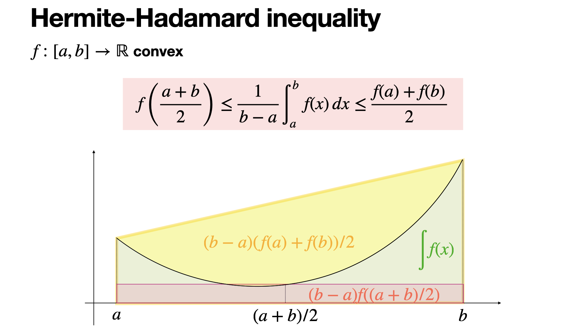

引入(Hermite-Hadamard)
对于凸函数,可以利用其几何特征(面积)推导出Hermite-Hadamard不等式(下文统一称为H-H不等式).

\[\begin{gathered} \boxed{(b-a)f(\frac{a+b}{2})\leq \int_{a}^b f(x)dx\leq (b-a)\frac{f(a)+f(b)}{2}(b\geq a)} \end{gathered}\]
如P-1所示,对于凸函数\(f(x)\),可以做做以下对应:
Hermite-Hadamard 不等式几何对应关系表
| 不等式组成部分 | 图中对应的面积区域 | 几何意义说明 | | :--- | :--- | :--- | | 左侧项：
\((b-a)f\left(\frac{a+b}{2}\right)\) | 红色半透明矩形
(底为 \(b-a\), 高为 \(f(\frac{a+b}{2})\)) | 中点矩形面积：代表在中点处作切线所围成的梯形面积(想一想为什么)。由于函数是凸的，切线完全位于曲线下方，因此该矩形面积最小。 | | 中间项：
\(\int_a^b f(x) dx\) | 绿色填充区域
(曲线 \(f(x)\) 下方的面积) | 积分平均值：代表曲线下的实际面积。在图中，绿色区域覆盖了红色矩形，但被最外层的黄色梯形所包含。 | | 右侧项：
\((b-a)\frac{f(a)+f(b)}{2}\) | 整个黄色阴影梯形
(连接 \((a, f(a))\) 与 \((b, f(b))\) 的割线下方) | 割线梯形面积：代表连接区间端点的割线（弦）与 \(x\) 轴围成的面积。由于凸函数的割线位于曲线之上，其面积最大。 |
我们下面证明这个不等式:
\((b-a)f(\frac{a+b}{2})\leq \int_{a}^b f(x)dx\)
设\(f(x)\)的原函数为\(F(x)\),\(g(x)=(x-a)f(\frac{x+a}{2})-(F(x)-F(a))(x\geq a)\)
\(g'(x)=f(\frac{x+a}{2})+\frac{x-a}{2}f'(\frac{x+a}{2})-f(x)\)
\(g''(x)=f'(\frac{x+a}{2})+\frac{x-a}{4}f''(\frac{x+a}{2})-f'(x)\)
因为\(f(x)\)为凸函数,\(f''(x+a)>0,f'(\frac{x+a}{2})\geq f'(x)\),所以\(g''(x)\geq 0\).
又\(g'(a)=0\leq g'(x),\)故\(g(x)\ge g(a)=0\)